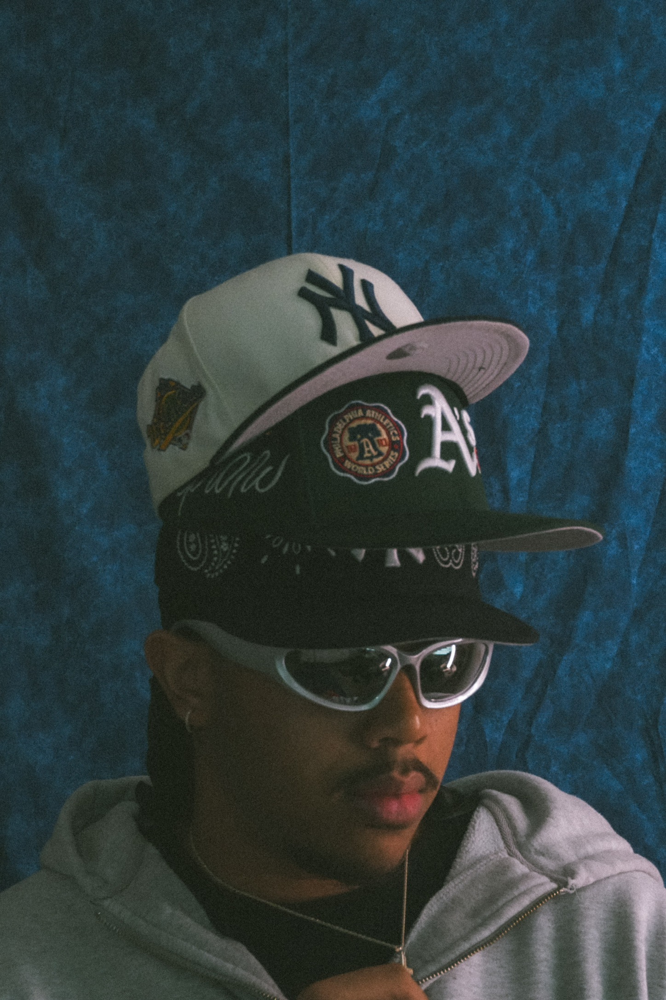

Hello! My name is Davian Allen and I am currently an Information Technology student at Georgia State University. I am originally from St. Petersburg, Florida and have been living in Georgia for several years. My interests in technology include software and web development, whlie outside of technology I have developed a strong passion for content creation, videography, photograhpy and graphic design.
The idea for Project Prism originally came from conversations between my father and I. His profession has given him experience with different areas of media, while I have developed my own passion for videography, photography, editing, and content creation. Through those conversations, we discussed concepts of technology that could make it easier for people to find creative professionals when they need services of photography or video. I wanted to take that idea and combine it with what I am learning in technology and web development to create Project Prism.
Project Prism is a website concept designed to connect clients with photographers, videographers, and other creative professionals. Clients would be able ot search for creators/post information about the type of project they need, including details such as location, date, budget, and type of service. Creators would be able to build profiles displaying their work, services, rates, and availability. My goal is for the website to make the process of finding and working with creative professionals simpler for both the client and the creator.
Project Prism also gives me an opportunity to combine two areas that I am interested in: technology and media. As I continue learning HTML, CSS, JavaScript, etc., I would like to continue developing this idea beyond a classroom assignment. This project gives me the opportunity to improve my programming skills while creating something connected to one of my personal creative interests.